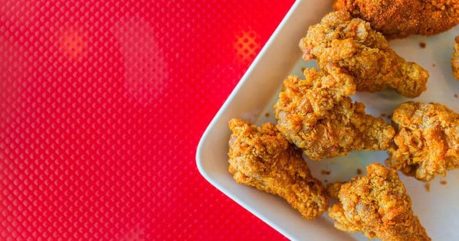
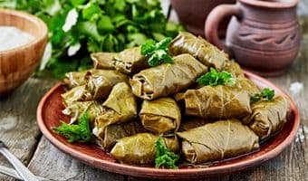
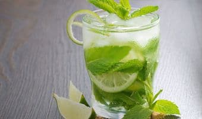
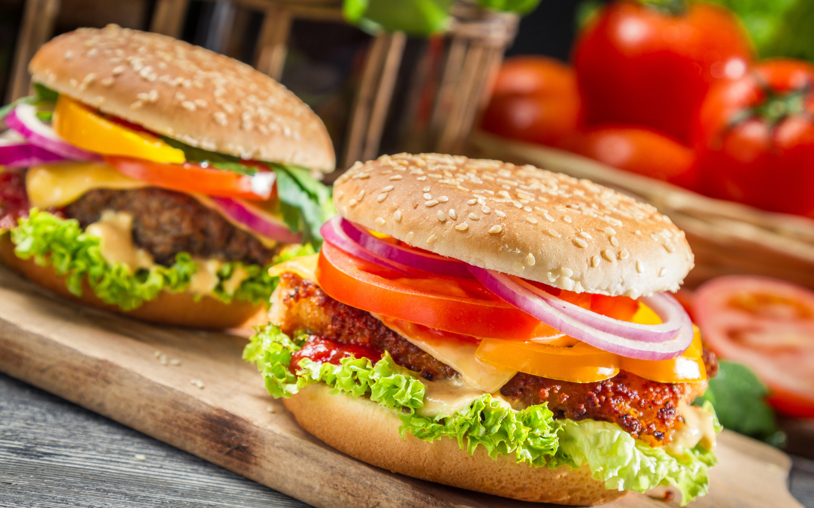

-

Taomlar
KFC tayyorlash repsepti
KFC tovuq qanotchalari tayyorlash retsepti kopchilik vilishni istaydi.Albatta restoran haqiqiy retseptni oshkor etmaydi.
-

Ichimliklar
DOLMA TAYYORLASH - UZUM BARGLARIDAN KOVATOK RETSEPTI
Tokli dolma (kovatok) uzum barglaridan tayyorlanadigan nafaqat ozbek,balki kavkaz, turk va yunon oshxonalarining mashhur
-

Desertlar
MOXITO TAYYORLASH RETSEPTI
Yozning issiq kunlarida alkogolsiz moxito kok-teyli chanqoqni qoldirish uchun ajoyib ichimlik sanaladi.
-

Salatlar
VAFLI TAYYORLASH
Ushbu retsept boyich tayyorlanadigan mazzali va hushboy vafli yetarlicha kop boladi.
-
 Desertlar
Desertlar
SHUBA OSTIDAGI SALATI RETSEPTI
Shuba ostidagi seid yoxud shuba salati eng mashxur rusch salatlardan biridir.U salatsiz deyarli hec bir bayram
-
 Taomlar
Taomlar
CHIZKEYK TAYYORLASH RETSEPTI- 5 TA ENG MAZALI TURIKFC tayyorlash repsepti
Yozning issiq kunlarida alkogolsiz moxito kok- teyli chanqoqni qoldirish uchun ajoyib ichimlik sanaladi.